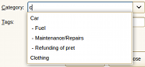
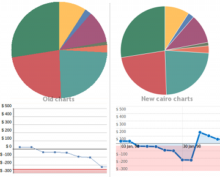
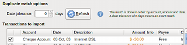

New features in v4.0
:: QIF file
import/export
QIF - Quicken Interchange Format is now supported It is now
possible to import QIF file, and also to export as QIF file.
This
new features are accessible from the 'File' menu.
:: Direct add
of Payee/Categories
Direct add of Payee/Categories is and ow available in the
transaction dialog.
For example if you need to insert a category,
you can saise directly: 'Car'.
And if you need to insert a
subcategory, you can saise: 'Car:Fuel'
:: Auto
completion
Auto completion is now available in the
transaction window for the following widgets:
Payee, Category, and
also for Description.

:: Tags for
transactions
The transaction now also provide a 'Tags' field which enable a new
classification and report axis.
Tags will also be displayed in the
transactions list, and the report will be availbale in the statictics
report window.
With that new feature, a same transaction can be
assigned to several 'group' which may be useful sometimes.
:: Charts
using cairo graphics library
The HomeBank graphics charts were
rewritten using cairo graphics library (used and included in
GTK+):
Also when the x-axis represent a portion of time (day,
month, or year), then some x-legend is displayed.

:: Enter
date improvement
The date widget was improved you can now enter date as follow:
- [day]
a single number will be
recognized to day number of current month
entering '15' to set
the date to the 15th of the current month
- [day/month] or
[month/day]
according to your country date format
- [complete date]
according to your country date format
::
Reworked import process
Step 2: File selection
The format recognition indicator is now
more visible:
Step 3: File content
The file to be imported is analyzed and inform you about the
number of:
accounts, transactions, payees, categories.
When
the file do not contains an explicit named account, you can choose:
- to create a new account
- to affect the transactions to an existing account
Step 4: Transaction selection
The duplicate match option is now
displayed above the transaction list:
